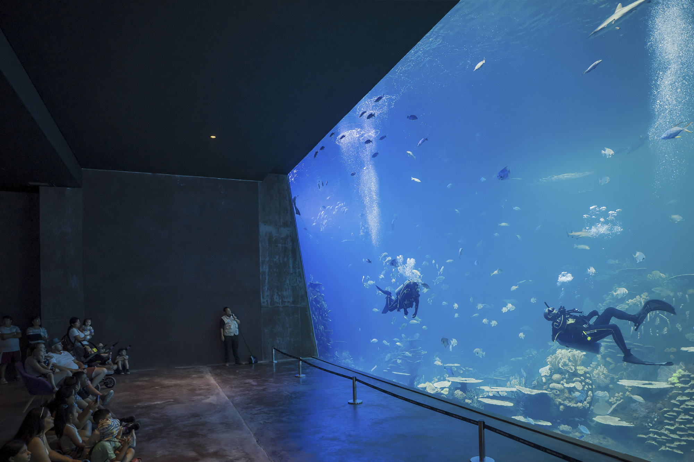

SOMOS LLENOS DE VIDA
+ de 30 hábitats
Tendrás acceso a más de 30 maravillosos hábitats.
Ventana oceánica
La ventana oceánica más grande de LATAM.
Actividades
Grandiosas actividades para toda la familia.

Gran Acuario Mazatlán, es el más grande de México y más importante en Latinoamérica, dedicado al Mar de Cortés.
Con un enfoque en la educación, la investigación y divulgación del conocimiento, marcará un referente en los acuarios del mundo. Ubicado estratégicamente en el Parque Central, Gran Acuario Mazatlán abre todos los días.
Horario
10:00 AM - 06:00 PM
Cierre de taquilla
04:00 PM
DESCUBRE EL GRAN ACUARIO MAZATLÁN
Planifica tu visita
Descubre la gran variedad de especies que alberga el Gran Acuario Mazatlán.
Ver Especies